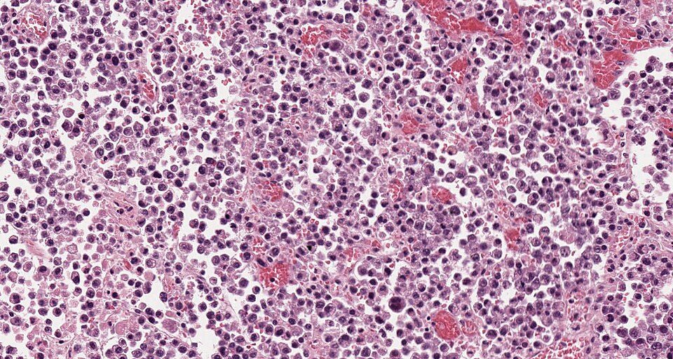

Información divulgativa. No sustituye la valoración de tu equipo médico ni sirve para decidir un tratamiento.


En resumen
| Quién | Niños menores de 10 años y adolescentes |
| Dónde | Cabeza y cuello (órbita), aparato genitourinario, extremidades |
| Tipos | Embrionario (mejor pronóstico) y alveolar (fusión PAX3/7-FOXO1, peor) |
| Tratamiento | Quimioterapia (VAC o IVA), cirugía y/o radioterapia |
| Supervivencia | 70 % en conjunto; más del 90 % en bajo riesgo |
Claves
- El embrionario aparece en niños pequeños; el subtipo botrioide crece como un racimo en la vagina o la vejiga.
- El alveolar es más frecuente en adolescentes, en extremidades, y tiene peor pronóstico.
- Asociado a síndromes como Li-Fraumeni, neurofibromatosis tipo 1 y DICER1.
- Tratamiento con quimioterapia (vincristina, actinomicina D, ciclofosfamida o ifosfamida), control local con cirugía y/o radioterapia (protones en niños pequeños), y mantenimiento con vinorelbina y ciclofosfamida en alto riesgo.
Ver también: Sarcomas, Cáncer infantil, Cáncer de vagina.
Historia · Medicapedia
Rabdomiosarcoma en la historia de la medicina
Cómo se descubrió, quién lo investigó y cómo cambió su tratamiento a lo largo de los siglos, contado en Medicapedia, nuestra web hermana de historia de la medicina.
Leer la historia en Medicapedia ↗Fuentes
- Skapek SX, et al. Rhabdomyosarcoma. Nat Rev Dis Primers. 2019;5:1.
- Bisogno G, et al. Vinorelbine and continuous low-dose cyclophosphamide as maintenance chemotherapy in high-risk rhabdomyosarcoma (RMS 2005). Lancet Oncol. 2019;20:1566-1575.30617-5)